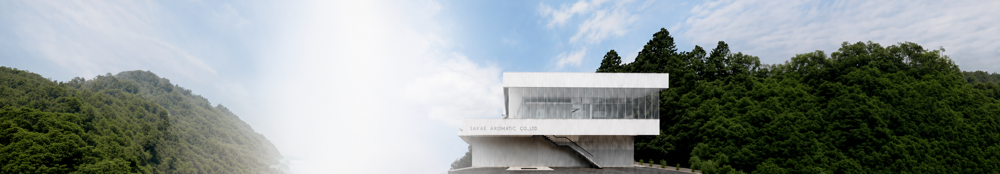
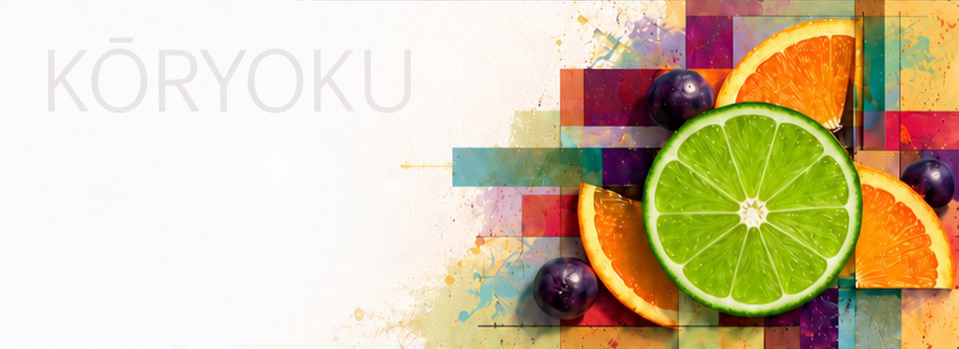
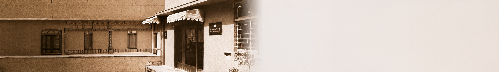
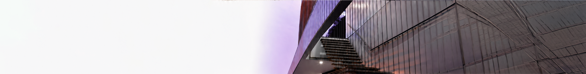
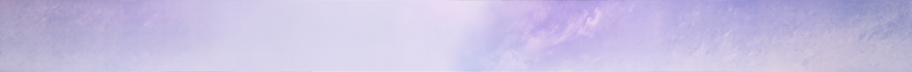

Flavor
Market-responsive flavor solutions for food, beverages and oral care.
OUR JAPANESE PRINCIPAL
THE POWER OF AROMA.
THE POWER OF PRODUCTS.
Creating flavors and fragrances that enrich human experiences and strengthen product value.

KŌRYOKU
Aroma can evoke landscapes, seasons, colors and memories. Sakae transforms this sensory power into meaningful product experiences, differentiation and lasting value.

80+ YEARS OF AROMATIC EXPERTISE
Founded in Nihonbashi, Tokyo in August 1945, Sakae Aromatic began with the belief that fragrance could bring comfort, happiness and richness into people’s lives.

FLAVOR. FRAGRANCE. CONNECTIONS.
Market-responsive flavor solutions for food, beverages and oral care.
Creative fragrance solutions for personal care, household and everyday experiences.
Specialized aromatic materials supported by international partnerships.

SAYAMA FACTORY & RESEARCH INSTITUTE
The Sayama Factory & Research Institute integrates fundamental research, application development, product creation and manufacturing within one location.
FSSC 22000 CERTIFIED
